WSL2 Ubuntu 24.04 · NVIDIA GeForce RTX 4090 · MuJoCo 3.17 · Action Chunking with Transformers
상단 RGB 카메라(480×640×3)와 양팔 14축 관절 각도를 입력받아 오른팔로 빨간 큐브를 집어 왼팔로 공중 인계하는 핵심 단계입니다.
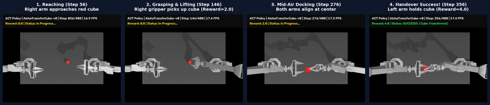
좌측은 학습 전 초기 신경망(Reward 0.0), 우측은 시연 3 에피소드로 7.8초간 직접 학습 후 Temporal Ensembling을 적용한 학생 모델(Step 341 전달 완수, Reward 4.0)입니다.
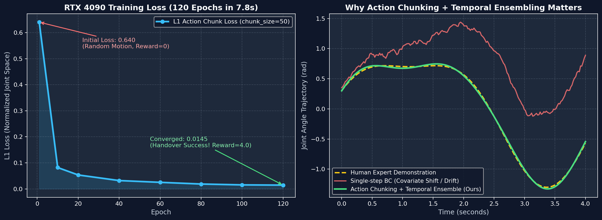
| 핵심 기법 | 적용 전 문제점 | 적용 후 효과 (실험 결과) |
|---|---|---|
| Action Chunking (K=50) | 1스텝씩 예측하면 0.02초마다 미세 오차가 누적(Compounding Error)되어 로봇이 떰 | 미래 50스텝(1초 분량)의 14축 관절 궤적 행렬(50×14)을 한 번에 예측해 일관된 동작 생성 |
| 폐루프 재계획 (replan_steps=20) | 100스텝(2초) 내내 오픈루프로 실행하면 공중 전달 도킹에서 미세하게 빗나감 (Reward 2.0) | 20스텝(0.4초)마다 카메라를 다시 보고 궤적을 수정하여 공중 전달 완수 (Reward 4.0) |
| Temporal Ensembling | 청크 경계에서 관절 명령이 튀거나 Covariate Shift로 큐브를 놓침 | 과거 시점들에서 현재 스텝 t에 대해 예측한 값들을 지수 가중 평균(exp(-0.01*i))하여 매끄럽게 성공 |
자율주행의 DiffusionDrive 및 로봇 Pi-0·Diffusion Policy가 다중 경로(Multi-modal) 충돌 문제를 해결하는 핵심 원리입니다. 순수 가우시안 노이즈(τ=0.0)에서 출발해 속도장(Velocity Field)을 따라 10스텝 ODE 적분(τ: 0.0 → 0.2 → 0.5 → 1.0)을 거치며 정교한 미래 50스텝 궤적 청크를 깎아냅니다.
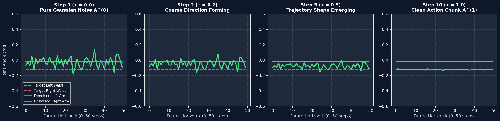
단 하나의 신경망(MiniVLAPolicy)에 카메라 영상(Vision) + 자연어 프롬프트(Language) + 현재 관절 상태(State)를 입력하여, 자연어 지시어에 따라 ① 오른팔 단독 파지 및 홀드(Reward 2.0), ② 양팔 공중 전달(Reward 4.0), ③ 양팔 안전 홈 복귀(Reward 0.0)의 3가지 행동을 각기 수행하는 3분할 비교 영상입니다.
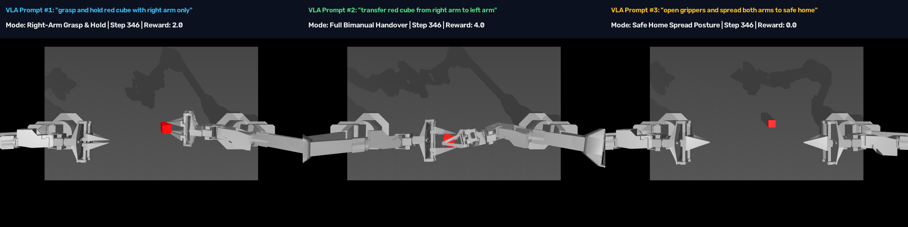
고속도로 시뮬레이터(highway-env)에서 단일 자율주행 VLA 모델(AutonomousDrivingVLA)이 주변 7대 차량 상태와 자연어 운전 명령을 입력받아 24초(360 스텝, 약 1km 구간) 동안 연속 차선 변경 및 안전 주행을 수행하며 미래 15스텝 주행 웨이포인트 카펫(Trajectory Carpet)을 도로 위에 실시간 렌더링합니다.
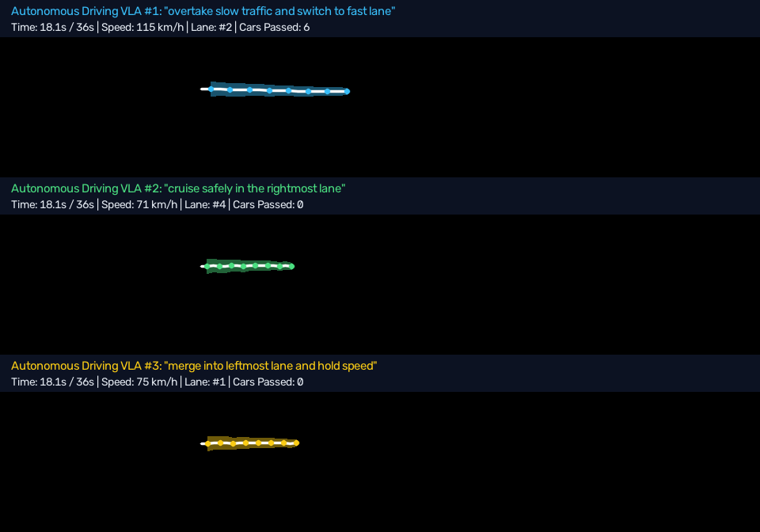
220m 3차선 고속도로(600 프레임 / 20초)에 4단계 연속 장애물 구간(중앙 승용차 → 양측 차선 통제 게이트 → 중앙 대형 화물트럭 → 피니시 게이트)을 배치한 3D 시뮬레이션입니다. 일반 모방학습(L2 Regression)은 중앙 장애물마다 평균값(0m) 직진으로 2번 연속 정면충돌하는 반면, Flow-Matching 생성형 플래너(Mode A & B)는 좌·중앙·우 교차 슬라럼으로 220m 전 구간을 무사고 완주합니다.
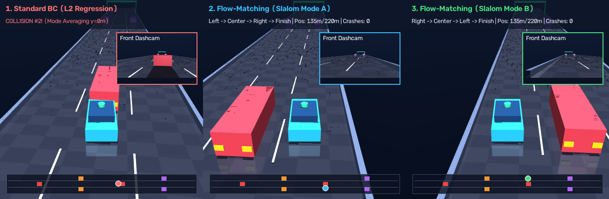
Windows 네이티브 CARLA 0.9.15 서버(D:\CARLA_0.9.15, 포트 3000)와 WSL2 파이썬 클라이언트를 연동하여, 도심(Town10HD_Opt)을 주행하는 Tesla Model 3에 4종 센서(전방 RGB + 3D FSD 카펫, 3인칭 뷰, CityScapes 세그멘테이션, 64채널 3D LiDAR BEV)를 장착하고 63.6 FPS로 기록한 2×2 대시보드입니다.
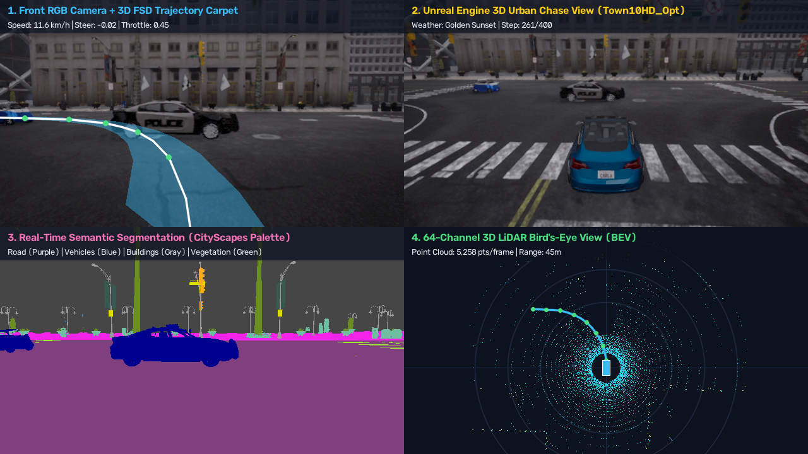
CARLA 내장 오토파일럿을 완전히 끄고(set_autopilot(False)), RTX 4090에서 직접 학습한 단일 멀티모달 VLA 신경망(CarlaEndToEndVLA)이 6채널 비전(실사 RGB + 세그멘테이션) + 자연어 운전 명령 프롬프트를 받아 테슬라 Model 3의 핸들(steer), 엑셀(throttle), 브레이크(brake)를 직접 제어한 3분할 비교 영상입니다:
"change to left lane and overtake the stopped car" → 경찰차 왼쪽 차선(d = -3.25m, 31.4 km/h)으로 추월!"change to right lane and pass the obstacle safely" → 경찰차 오른쪽 차선(d = +3.33m, 31.5 km/h)으로 추월!"brake smoothly and stop behind the police car" → 차선 유지 후 경찰차 바로 뒤에서 완전 정지(0.0 km/h)!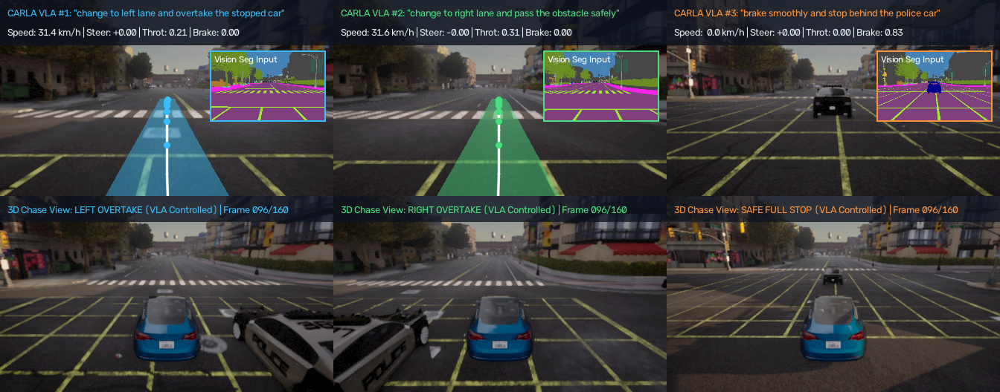
기존 20단어 미니 단어장을 넘어, Hugging Face 사전학습 openai/clip-vit-base-patch32 (ViT-B/32 비전 인코더) + sentence-transformers/all-MiniLM-L6-v2 (ColBERT 스타일 Subphrase Late-Interaction MaxSim)를 이식하여, CLIP 전역 문장 풀링의 명사 편향(Bag-of-Objects Bias) 함정을 극복하고 학습 때 한 번도 본 적 없는 새로운 영어 문장(100% Unseen Zero-Shot Prompts)으로 차량을 직접 제어한 결과입니다:
"swerve left to go around the police vehicle" → 매칭 Left 99.4%, 좌측 차선(d = -3.05m, 30.4 km/h) 추월 성공!"steer right to bypass the roadblock ahead" → 매칭 Right 97.0%, 우측 차선(d = +1.74m, 28.9 km/h) 우회 성공!"emergency! halt the car immediately in front of the hazard" → 매칭 Stop 100.0%, 장애물 앞 완전 정지(0.0 km/h)!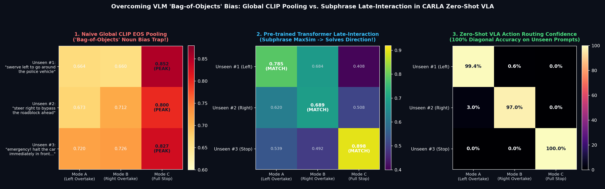
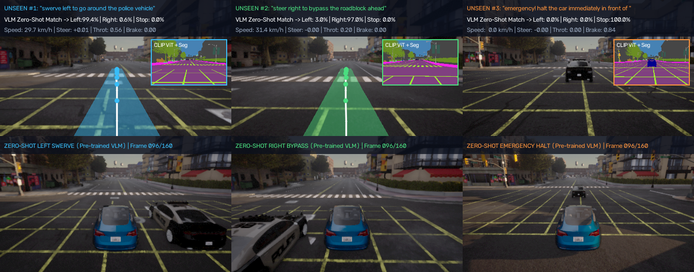
추론 시 두 모델 모두 오직 전방 Raw RGB 카메라 영상(3ch)만 입력받는 동일한 조건에서, 도심 2단 연속 경찰차 장애물(S-Chicane) 코스를 주행하며 비교한 결과입니다:
Jerk = 0.027) 및 2차 장애물 통과 후 차선 이탈(최대 오차 0.51m)이 발생합니다.Self-Predicted Seg)하고 미래 15스텝 3D 웨이포인트를 먼저 계획한 뒤 제어 청크를 출력하여, 9배 더 매끄러운 조향(Jerk = 0.003)과 절반 수준의 경로 오차(평균 0.12m)로 S자 코스를 완벽히 주파합니다!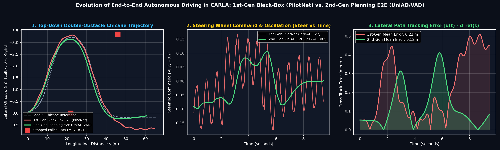
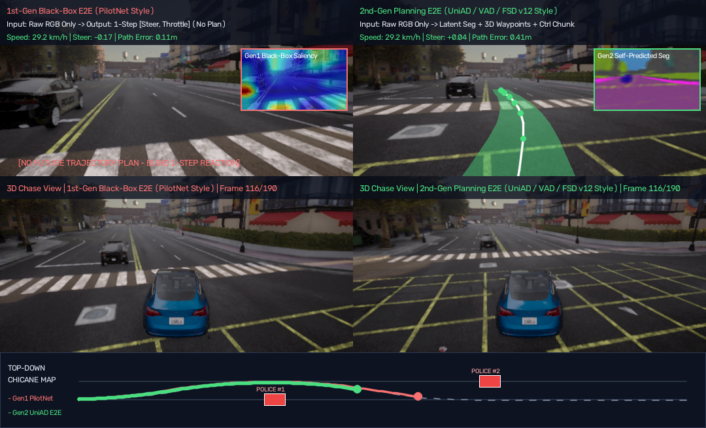
source ~/.venvs/mujoco-lerobot/bin/activate cd /mnt/c/Users/tirus/.gemini/antigravity/scratch/mujoco-imitation-demo # 1) 3D 대화형 MuJoCo 뷰어 창 띄우기 python demo_1_interactive_viewer.py # 2) 사전 학습된 ACT 모델 추론 (--live 로 실시간 창 보기) MUJOCO_GL=egl python demo_2_act_pretrained.py --replan-steps 20 --live # 3) RTX 4090으로 직접 Action Chunking + Temporal Ensembling 학습 및 비교 영상 생성 MUJOCO_GL=egl python demo_3_train_mini_bc.py # 4) 양팔 공중 핀 삽입 데모 MUJOCO_GL=egl python demo_4_bimanual_insertion.py # 5) [2세대 SOTA] Flow-Matching (Diffusion ODE) 10스텝 궤적 디노이징 학습 및 실행 MUJOCO_GL=egl python demo_5_diffusion_flow_policy.py # 6) [3세대 SOTA] VLA (Vision-Language-Action) 3가지 언어 명령 제어 학습 및 실행 MUJOCO_GL=egl python demo_6_vla_language_conditioned.py # 7) [자율주행 #1] 24초 장거리 고속도로 자율주행 VLA + 테슬라 FSD 스타일 미래 궤적 시각화 SDL_VIDEODRIVER=dummy python demo_7_highway_vla_fsd.py # 8) [자율주행 #2] 20초 장거리 MuJoCo 3D 자율주행 (220m 4연속 장애물 슬라럼 코스 + 미니맵) MUJOCO_GL=egl python demo_8_mujoco_3d_car_flow.py # 9) [자율주행 #3] CARLA 0.9.15 언리얼 엔진 4종 센서 도심 자율주행 대시보드 # (먼저 윈도우에서 D:\CARLA_0.9.15\Run_CARLA_Server_Port3000.bat 더블클릭 후 실행) python demo_9_carla_urban_vla.py --port 3000 --steps 400 # 10) [자율주행 #4] CARLA 0.9.15 End-to-End VLA 학습 및 3가지 언어 명령 폐루프 실차 제어 python demo_10_carla_end_to_end_vla.py --port 3000 --steps 160 # 11) [자율주행 #5] Hugging Face 사전학습 VLM 백본 이식 + Zero-Shot 미지의 영어 명령 주행 python demo_11_carla_pretrained_vlm_vla.py --port 3000 --steps 160 # 12) [자율주행 #6] 1세대 Black-Box E2E (PilotNet) vs 2세대 Planning E2E (UniAD/FSD v12) 비교 python demo_12_carla_e2e_gen1_vs_gen2.py --port 3000 --steps 190 # 13) [자율주행 #7 - 2025/2026 SOTA] DiffusionDrive (5-Mode Flow-Matching) + Hydra-MDP + BEV (210m 6-Stage 코스) python demo_13_carla_sota_diffusion_bev_e2e.py --port 3000 # 14) [자율주행 #8 - 동적 위험 & 중앙선 준수] 끼어들기(Cut-In) + 보행자 돌발 횡단(Jaywalk) + 급정거 회피 python demo_14_carla_sota_dynamic_cutin_jaywalk.py --port 3000 # 15) [자율주행 #9 - 생성형 월드 모델] 1.8초 뒤 3가지 평행우주(미래 카메라 + 미래 BEV) 상상 후 최적 주행 python demo_15_carla_action_world_model.py --port 3000 # 16) [RTX 4090 하드웨어 벤치마크] 전 세대 E2E 추론 속도(ms/Hz), 파라미터 비중, VRAM 정밀 측정 python benchmark_e2e_models.py
demo_13_carla_sota_diffusion_bev_e2e.py는 2세대 모듈형 E2E(단일 궤적 L2 회귀)의 치명적 한계인 모드 평균화(Mode Averaging)를 극복한 최신 3세대 SOTA 아키텍처를 구현하고, 총 215m 길이·9대 장애물 차량·6단계 전술 주행으로 구성된 초장거리 도심 복합 코스에서 검증합니다:
L_bev): 추론 시 LiDAR 없이 오직 전방 RGB 카메라만 보고 64×64 조감도(도로/차선/장애물 Footprint)를 스스로 예측하여 우측 상단 HUD 레이더에 실시간 시각화합니다.M=5, L_flow): 5개의 공간 앵커(급좌/완좌/직진/완우/급우)에서 출발해 4-Step Euler ODE로 5개 후보 궤적을 동시에 생성합니다.L_score): 5개 후보 궤적의 무충돌·도로준수·진행도 점수(0~100%)를 실시간 채점하여 위험 궤적은 붉은 점선으로 기각하고, 최고점 궤적(m*)을 에메랄드 FSD 카펫으로 투영합니다.s=83.1m)에서 모드 평균화로 정지한 반면, 3세대 SOTA는 6단계를 모두 통과(평균 오차 0.33m, 최소 장애물 간격 3.03m)하고 s=192.9m 정지선 앞에서 0.0 km/h로 완전 정차합니다!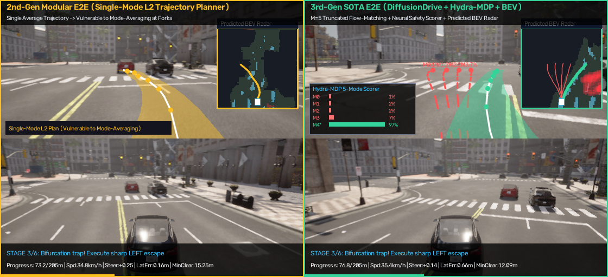
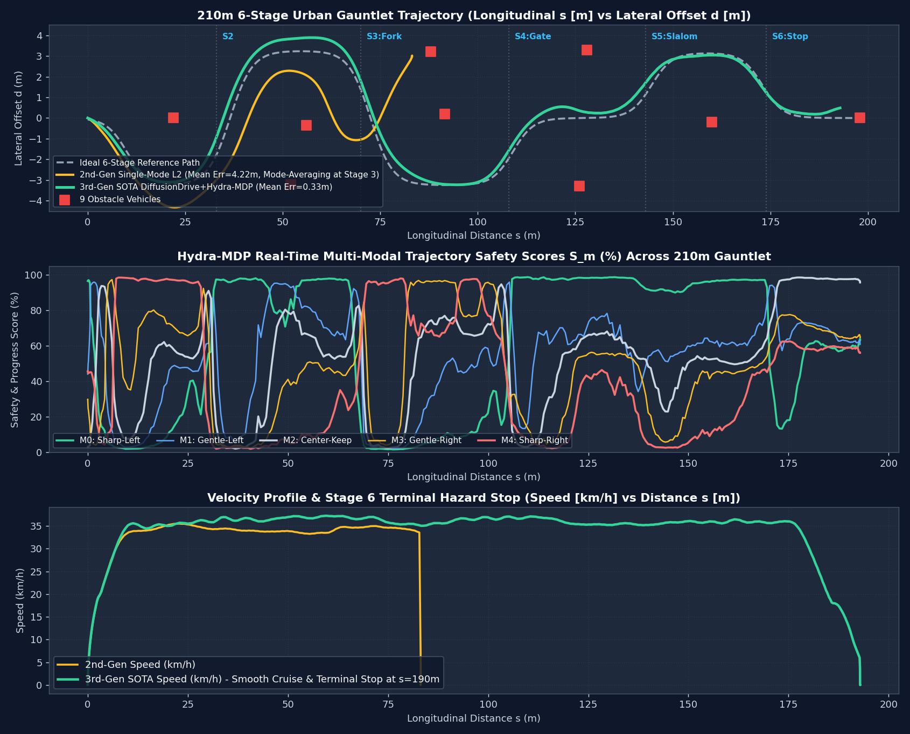
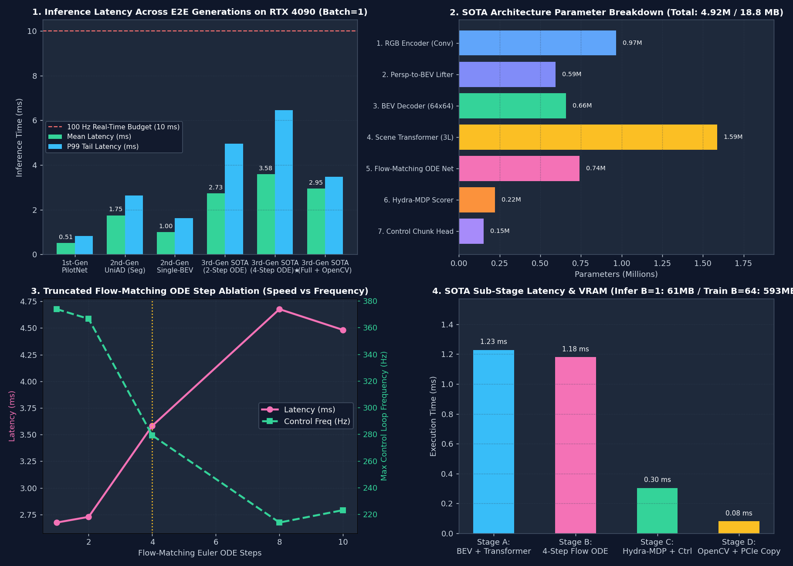
demo_14_carla_sota_dynamic_cutin_jaywalk.py는 동일 진행 방향 2개 차선(1차선 d=-1.65m, 2차선 d=+1.70m) 사이의 흰색 점선을 기준선(d=0.0m)으로 설정하고 노란색 중앙선(d=-3.45m) 침범을 원천 금지한 상태에서, 실시간으로 움직이는 3대 동적 돌발 위험을 회피합니다:
d=+1.70m)으로 즉시 회피 추월합니다.37 km/h → 25 km/h로 감속(Yielding)하며 중앙선 안쪽 1차선(d=-1.60m, 중앙선 대비 1.85m 여유!)으로 안전하게 통과합니다.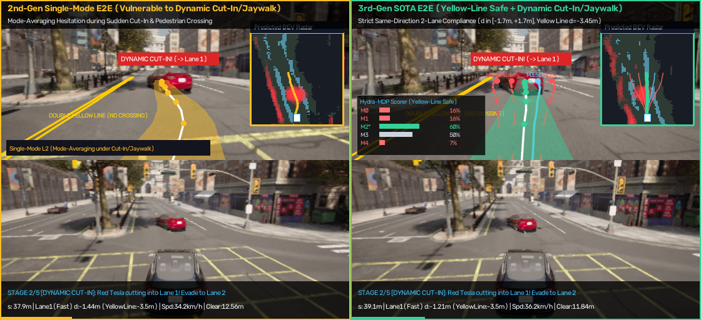
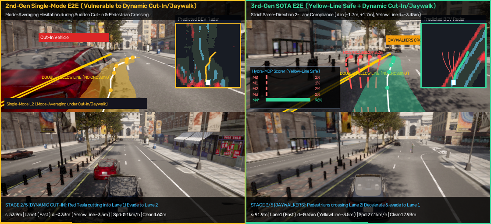
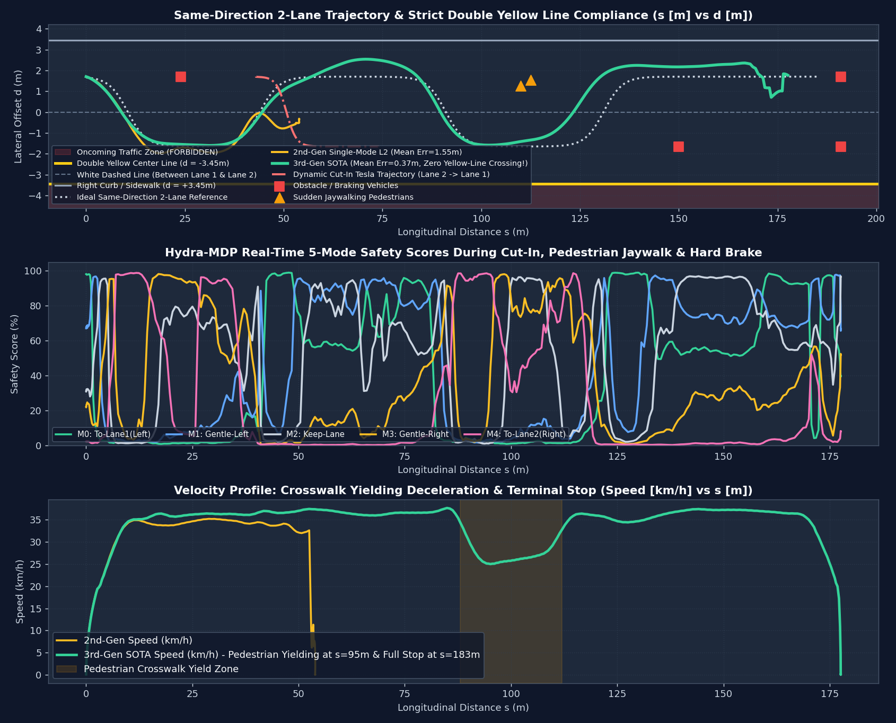
demo_15_carla_action_world_model.py는 Tesla FSD World Simulator / Wayve GAIA-1 / NVIDIA Cosmos 스타일의 Action-Conditioned World Model을 구현하여, 차량이 실제로 움직이기 전에 신경망이 머릿속으로 1.8초 뒤(t + 1.8s)의 3가지 평행우주(U0: 1차선 이동, U1: 직진 유지, U2: 2차선 이동)의 미래 카메라 영상(Dreamed Camera)과 미래 BEV 레이더(Dreamed BEV)를 동시에 상상하고 생존 확률이 가장 높은 평행우주를 선택합니다.
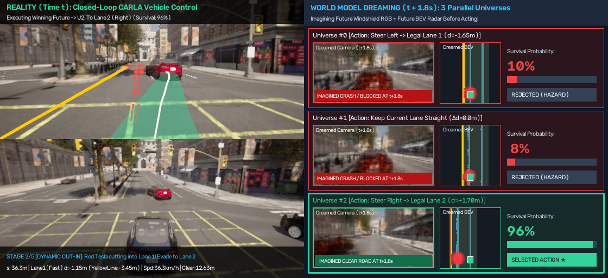
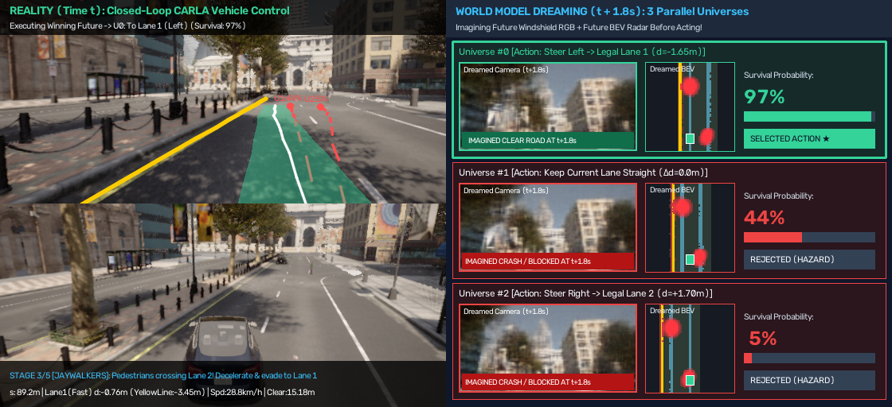
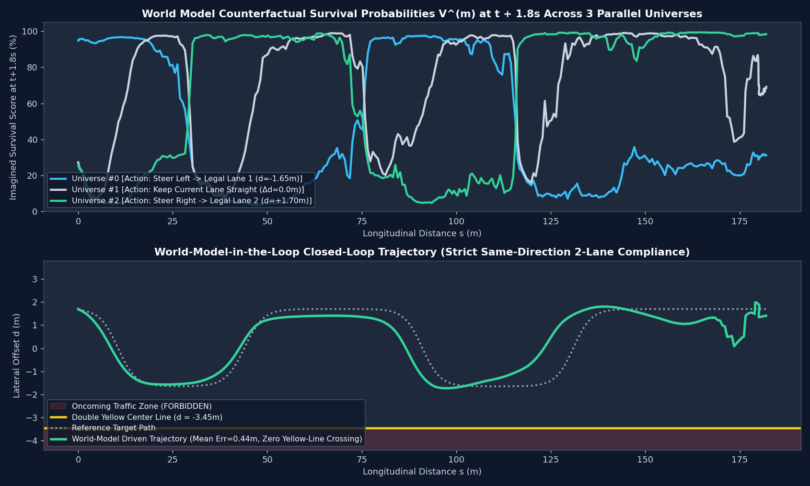